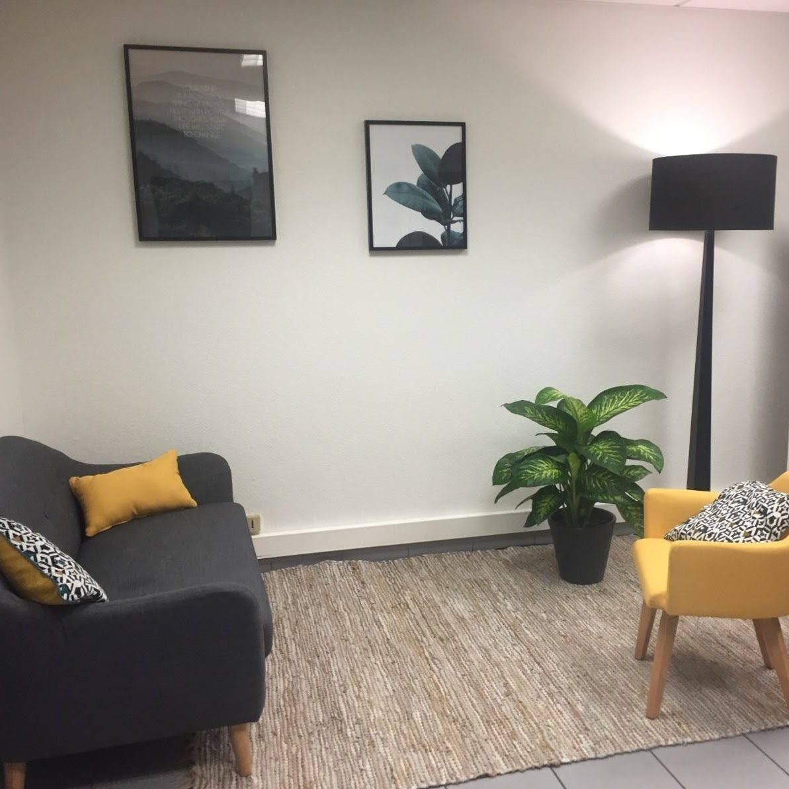
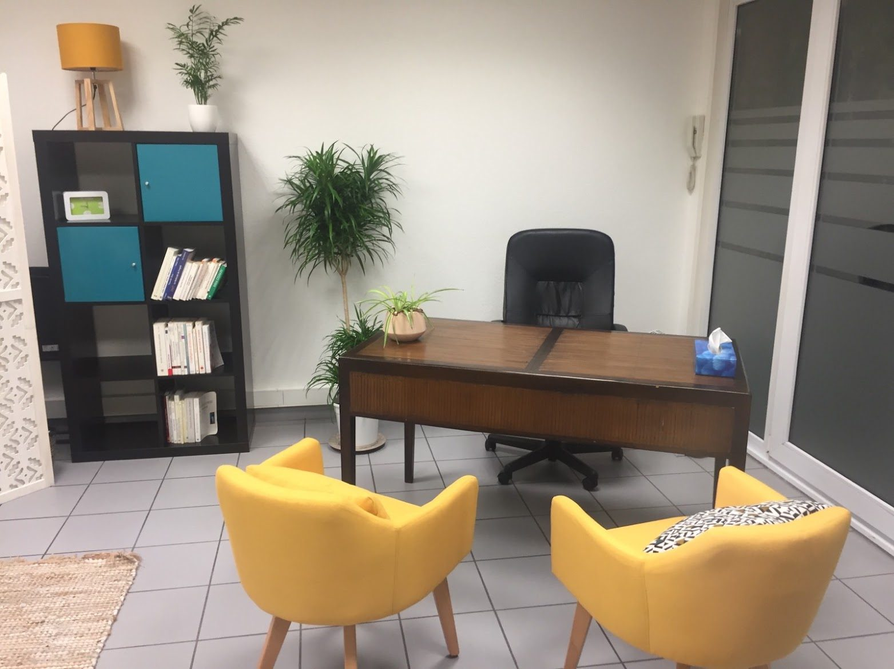

De novembre à janvier, j’ouvre exceptionnellement mon agenda à de nouveaux patients.
أحمد محمودي
J'aide des adultes à comprendre ce qu'ils ressentent et à reprendre la main dessus. Avec des outils qui ont fait leurs preuves, et sans détour.

01
Le plus souvent, pour des émotions : celles qui débordent, celles qui écrasent, celles qu'on n'arrive plus à sentir. Le reste vient souvent avec.
Anxiété, inquiétude, phobies, TOC
Dépression, troubles de l'humeur
Burn-out et épuisement
Psychotraumatisme
Difficultés relationnelles, troubles de la personnalité
Neurodivergences, fonctionnements atypiques
Affirmation de soi, estime de soi
Questions existentielles
02
Vous n’avez pas à rentrer dans une case pour venir.
Je reçois des adultes de tous âges, de toutes origines, croyants ou non, quelle que soit votre orientation, votre identité ou votre façon de fonctionner. Si vous êtes neuroatypique, on adapte le rythme et la forme des séances.
Votre culture et votre histoire font partie de la thérapie. Elles ne sont pas un obstacle à contourner.
03
« Je vous dirai ce que je pense, y compris quand ce n'est pas confortable. C'est souvent là que le travail commence. »
Je pratique des thérapies dont l’efficacité a été évaluée par la recherche. Je la suis, je l’enseigne, et je ne vous proposerai jamais un outil dont je ne connais pas les fondements. Et quand une difficulté sort de ce que je connais bien, je me documente dans la littérature scientifique. Si quelqu’un d’autre est mieux placé que moi pour vous aider, je vous le dis.
Chaque outil a une raison d’être, et je vous l’explique. Comprendre pourquoi on fait les choses, c’est déjà une partie du soin.
Les thérapies cognitives et comportementales (TCC) : comprendre comment pensées, émotions et comportements s'entretiennent, et changer ce qui coince, concrètement.
L'ACT, la pleine conscience et la thérapie focalisée sur les émotions : apprendre à vivre avec ce qu'on ressent plutôt que de lutter contre, pour avancer vers ce qui compte.
La thérapie des schémas, quand les mêmes difficultés reviennent depuis longtemps et qu'il faut comprendre d'où elles viennent.

Un cabinet, une personne.
Pas de plateforme, pas de secrétariat, pas d’équipe. C’est moi qui lis vos messages, moi qui vous réponds, moi que vous voyez à chaque séance, du premier rendez-vous au dernier.
04
Le nom technique, et ce que ça veut dire concrètement.
Analyse fonctionnelle
Repérer ce qui déclenche et ce qui entretient le problème.
Restructuration cognitive
Examiner les pensées qui piègent, au lieu de les croire d’office.
Exposition
Affronter progressivement ce qu’on évite, pour que la peur perde du terrain.
Activation comportementale
Remettre du mouvement quand la dépression a tout figé.
Défusion et valeurs (ACT)
Prendre de la distance avec ses pensées et avancer vers ce qui compte.
Pleine conscience
S’entraîner à observer sans réagir au quart de tour.
Travail sur les schémas
Comprendre les blessures anciennes qui se rejouent aujourd’hui.
Régulation émotionnelle
Des compétences concrètes pour traverser les émotions intenses.
Affirmation de soi
Dire non, demander, poser ses limites.
Entre les séances
Des fiches et des exercices pour que le travail continue chez soi.
05
Vous connaissez votre vie. Je connais les outils. On avance à deux.
Faire le point
Au premier rendez-vous, vous me dites ce qui vous amène. Je vous dis honnêtement si je peux vous aider, et comment.
Fixer le cap ensemble
Les objectifs, on les définit à deux. C'est votre thérapie : vous savez où on va et pourquoi.
Travailler, en séance et entre les séances
On comprend, on essaie, on s'entraîne. Le changement se joue aussi dans votre quotidien.
Faire des points d'étape
Régulièrement, on regarde ce qui avance et ce qui résiste, et on ajuste.
06
22 ans de pratique, dont une longue partie en psychiatrie adulte, en clinique, et un cabinet à Lille depuis 2008. J'enseigne aussi, à l'Université de Lille et dans le DU de TCC, j'ai formé une vingtaine de psychologues en stage, et je reste en lien étroit avec la communauté scientifique des TCC.
Formation
Deux masters de psychologie : un master recherche et un master de clinique des TCC.
Approches
ACT (J.-L. Monestès, M. Villatte), FAP (B. Schoendorff), pleine conscience (P. Philippot), thérapie des schémas, thérapie focalisée sur les émotions, psychologie positive (M. Seligman).
Enseignement
Troubles de la personnalité, TOC et troubles anxieux, TCC, affirmation de soi, psychométrie et statistiques.
En groupe
Thérapie des schémas, affirmation de soi, habiletés sociales, gestion du stress.
Je voyage beaucoup, et ça se ressent en séance : rencontrer d’autres façons de vivre m’a appris qu’il n’y a pas une seule bonne manière d’exister. Entre deux départs : la peinture à l’huile, le cinéma, la photo, les musiques du monde.
07
Qui je reçois
Des adultes. Des adolescents à titre exceptionnel. Pas d'enfants.
Séances
Environ 50 minutes, au cabinet ou en visio, en français, en arabe ou en anglais.
Ce que je ne fais pas
Pas de bilans ni de tests diagnostiques (TSA, TDAH, HPI). Je fais uniquement de l'accompagnement thérapeutique.
Horaires
Lundi, mardi, jeudi, vendredi : 9 h – 16 h
Mercredi : 9 h – 17 h
Sur rendez-vous uniquement
Tarif
Séance : 70 €
Non conventionné
Facture fournie pour votre mutuelle
Le cabinet
253 rue Pierre Legrand, Bureau 2
59800 Lille
Voir sur la carte
Métro ligne 1, station Marbrerie, à 2 minutes à pied.
En voiture : stationnement dans les rues alentour, ou parkings à réserver rue Pierre Legrand.
08
Le plus simple est de réserver directement sur Doctolib. Vous pouvez aussi m'écrire par SMS. Je n'écoute pas les messages vocaux : un SMS me parvient plus vite.
En cas d’urgence, appelez le 15.